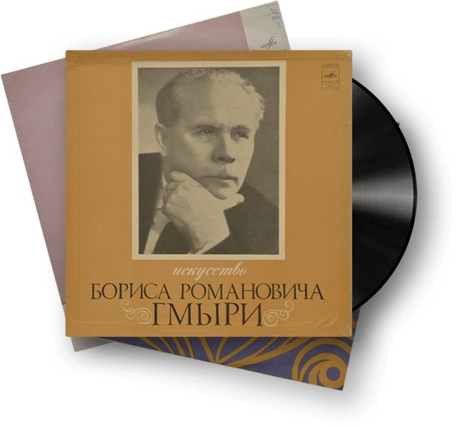
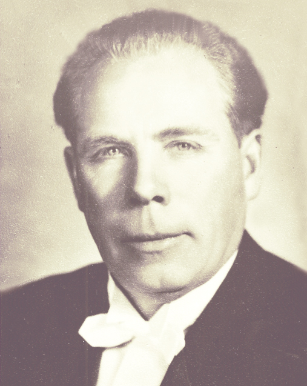
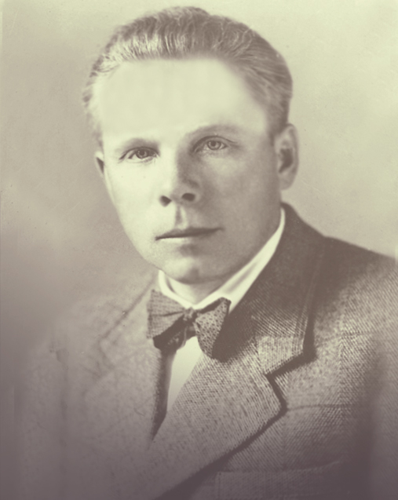

- Назва банківської установи:
- АБ «УкрГазбанк»
- Розрахунковий рахунок:
- 26007001581512
- МФО:
- 320478
- ЄДРПОУ:
- 2152371
- Призначення платежу:
- Фонд Бориса Гмирі
ЗБЕРЕЖЕМО СПАДЩИНУ БОРИСА ГМИРІ!
Фонд Бориса Гмирі береться за важливу справу — оцифрувати й реставрувати понад 600 музичних творів у виконанні Бориса Гмирі, що зберігаються на магнітній стрічці «СВЕМА», яка осипається і записи гинуть До проекту планується залучити найкращих професіоналів для підготовки якісного музичного продукту.
Борис Гмиря, всесвітньо відомий український оперний і камерний співак (бас). Його творча спадщина є неоціненною: він залишив по собі 1200 музичних творів, які зберігаються в його архіві. Аби врятувати їх необхідно перенести на сучасні електронні носії. Порятунок цих записів – це питання збереження і розвитку найкращих зразків високого народного і класичного мистецтва України.Міжнародний фонд «Відродження» готовий допомогти реалізувати цей задум і підтримати проект на 50% його вартості. Оскільки творча спадщина Бориса Гмирі є надбання всього українського народу ми пропонуємо долучитися всіх небайдужих, аби разом зібрати решту 50% вартості проекту. Долучаючись до проекту ми робимо добру справу не лише для наших сучасників, але для майбутніх поколінь.
Реалізацію проекту контролюватиме Наглядова Рада, до якої увійшли: Марія Стеф'юк, відома оперна співачка, Андрій Куликов, голова правління ГО «Громадське радіо» і Микола Третяк, режисер-постановник Національної опери України. Допомогти у реалізації задуму Фонду Бориса Гмирі, можна перерахувавши кошти на спеціальний рахунок.
Вже реставрованно
600 музичних творів
600 музичних творів
1945
7 500 000 000
ПЛАТІВОК
Протягом 1945-1970 рр. фірмою “Мелодия” (Москва) було випущено понад 200 платівок зі співом Гмирі, тираж яких складав від 100 тис. до 600 тис. і перевидавали їх 120 разів. Сукупний випуск склав 7,5 мільярдів примірників.


1962
THE INTERNATIONAL WHO’S WHO. 1962 РІК
У 1962 році ім'я Бориса Гмирі внесено до престижної Міжнародної енциклопедії «Who is who»
2003
ПОСЛАННЯ UNESCO
"…Гмиря відомий як “Борис Великий” і його величний бас визнано унікальним надбанням не лише України, а й світової культури загалом.…
ЮНЕСКО, 11.09.2003 р.
Його філософські та епістолярні праці також мають велику цінність для світової культури…"


1930
1930 р.
У 1930 Борис Гмиря, зарахований студентом у Харківський інженерно-будівельний інститут. На четвертому курсі його, запрошують на прослуховування до консерваторії. За особистим розпорядженням тодішнього наркома освіти М.Скрипника Б.Гмиря, як виняток, одержує право навчатися у двох вузах одночасно, які й закінчив з відзнакою. На третьому курсі консерваторії студентові Б.Гмирі запропоновано роботу в Харківському театрі опери, де він і працював до її закінчення навчання.
У 1935-36 рр. - аспірант Харківського науково-дослідного інституту споруд. Встиг написати наукову статтю.
1939
1939 р.
У Київському театрі опери та балету
(з перервою). Від 19 вересня 1943 до 1 червня 1944 працював у Кам'янці-Подільському: спочатку в переведеному сюди німцями Полтавському музично-драматичному театрі, а після його приходу Червоної армії – у міському музично-драматичному театрі.
Мав голос широкого діапазону, безмежних виражальних можливостей, м'якого, красивого тембру;
Є співаком високої вокальної культури, неперевершеним виконавцем українських, російських та західних романсів.